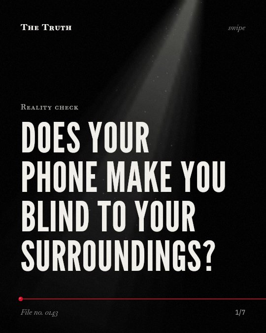

Reality check
Does your phone make you blind to your surroundings?

There is no data on physical hazards.
The current evidence does not show how smartphone use affects your ability to see physical dangers.
Supported. At least one solid peer-reviewed study. The evidence goes against the popular idea.
What the research found
Careless responding was rare, and participants reported high levels of integrity and motivation during experience sampling with mobile devices.
“Moreover, data quality was high: careless responding was rare, and participants reported high levels of integrity and motivation.”
Study, 2026. Achterberg, Journal of research on adolescence : the official journal of the Society for Research on Adolescence.
MDM shapes learners' psychological experiences primarily by regulating attention rather than directly modulating emotional responses.
“These findings suggest that MDM shapes learners' psychological experiences primarily by regulating attention rather than directly modulating emotional responses.”
Study, 2026. Liu & Zhu, Frontiers in Psychology.
Performance during experienced distraction, low effort, and out of the home location was reduced yet still correlated with the in-lab HVLT.
“Performance during experienced distraction, low effort, and out of the home location was reduced yet still correlated with the in-lab HVLT.”
Study, 2020. Parrish et al., Schizophrenia Bulletin.
Research focuses on internal regulation.
Studies show mobile devices are used to regulate attention and collect data. They focus on psychological experiences in education and mental health rather than outside physical risks.
The data is incomplete.
Because the evidence is mixed and limited to specific research contexts, we cannot say for certain how your phone affects your physical awareness.
This part is our reading of the evidence, not a finding.
Walking to the train station.
You look down at your screen while navigating the platform. You move through the crowd without looking up at the signs or the people around you.
The honest summary
The provided sources do not contain data regarding the impact of smartphone use on the perception of physical hazards.
The sources primarily discuss methodological validity and psychological experiences in specific research contexts like education and mental health.
What are you missing while you look down?
Sources
- Emma M. Parrish, Snigdha Kamarsu, Philip D. Harvey et al. (2020). Remote Ecological Momentary Testing of Learning and Memory in Adults With Serious Mental Illness. Schizophrenia Bulletin. Study, cited 34 times.
- Achterberg M (2026). In the moment, out of reach? Experience sampling with adolescents in the context of school smartphone bans and shifting societal norms. Journal of research on adolescence : the official journal of the Society for Research on Adolescence. Study, cited 1 times.
- Liu X, Zhu J (2026). Psychological effects of hybrid SCMC with mobile device management: distraction, classroom atmosphere, and foreign language anxiety. Frontiers in Psychology. Study.
Also read for this file, not quoted
- Paterson et al. (2023). Current Landscape of Ecological Momentary Assessment (Real-Time Data) Methodology in Cancer Research: A Systematic Review.
- Atteveldt et al. (2018). Neuroimaging of learning and development: improving ecological validity.
- Chang et al. (2022). Ecological validity in exercise neuroscience research: A systematic investigation.
This file was researched and drafted by software, then checked by rules a model cannot talk its way around: each quote above was matched word for word against the paper, and every number had to appear in it. How files are made.